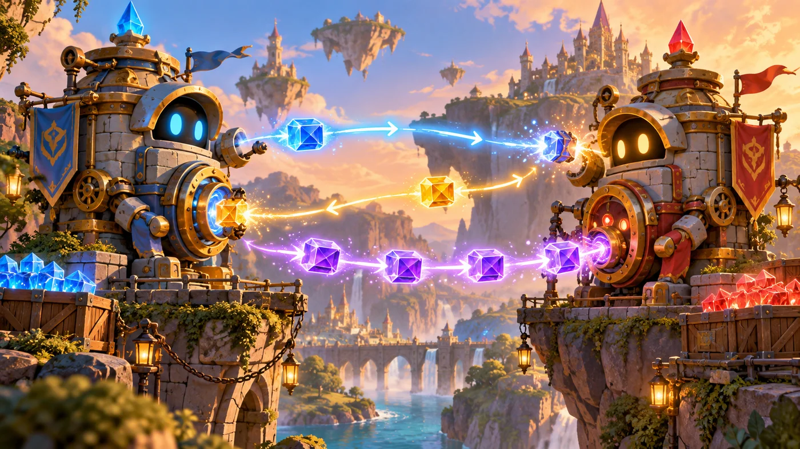
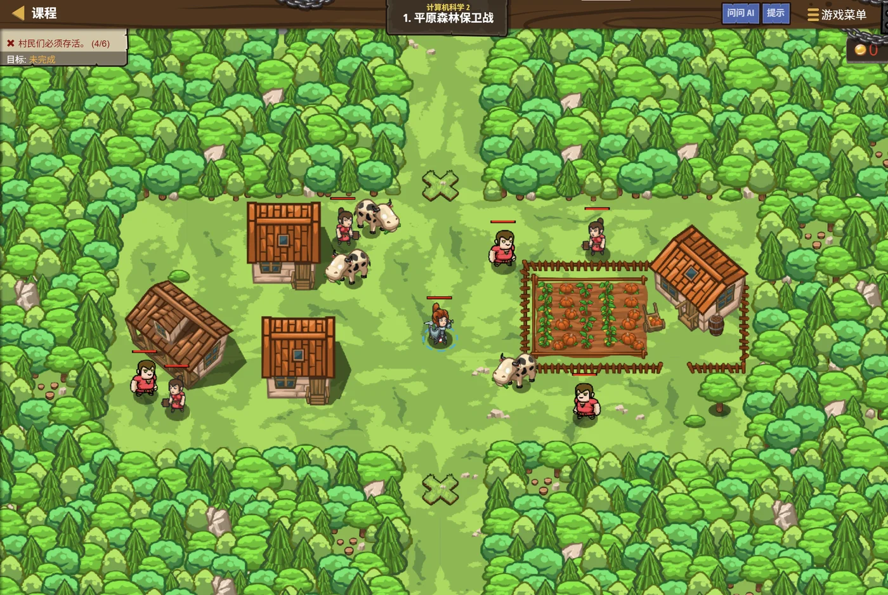

故事：溪谷东边是一片开阔的林地，村民刚把家当搬来，还来不及筑栅栏。
安雅指着地图上两个闪烁的标记：你不需要追着敌人跑——只要在这两个点上各修一段围栏，就能把所有的入口都封住。
这就是策略：不用做很多事，只要做对的那几件。
扣哒考级 · GESP C++ 二级 · 第 1 单元 | 回声溪谷 ECHOSTREAM VALLEY
溪谷的耳语 计算机存储与网络
Storage & Networks

安雅
红发队长 · 你的向导
顺着烛火岗哨往北走三天，山势忽然裂开一道口子——一条溪谷横在眼前。
谷底的水是青色的，安静得像一块镜子。可只要你喊一声，两岸的岩壁就会把你的话一层层递回来。
听见了吗？安雅停下脚步，这一整条谷，就是一座巨大的回声机。
你忽然想到一件事：你喊出去的是"一句话"，回来的时候还是"一句话"——可它中间明明隔着那么远。
谷底的水是青色的，安静得像一块镜子。可只要你喊一声，两岸的岩壁就会把你的话一层层递回来。
听见了吗？安雅停下脚步，这一整条谷，就是一座巨大的回声机。
你忽然想到一件事：你喊出去的是"一句话"，回来的时候还是"一句话"——可它中间明明隔着那么远。
安雅 · 红发队长
上一级我们把程序"教会了"——会算、会挑、会重复。可你有没有想过：这些数字、这些字，到底被放在哪里？程序停了以后，它们还在不在？
还有——两台隔着几百里的电脑，是怎么"听见"对方说话的？
这一单元就讲这两件事：存储和网络。
assets/illustrations/py-L2-01-01_echo_valley.webp
【配图位】薄雾笼罩的回声溪谷：两岸各立着一座石砌哨站，谷底一汪青色的静水像镜子；一名新兵站在岸边朝对岸喊话，声音化作几条发光的丝带在水面上来回传递、逐层折返；清晨的柔光从谷口斜射进来。
0 单元导语与目标
Unit Overview
0.1 学习目标
1学完这个单元，你将能……
- 说清存储器是干什么用的，它和 CPU 是什么关系
- 分清 RAM、ROM、Cache 三种存储器，说出它们各自的特点
- 算清位、字节、KB、MB、GB 之间的换算
- 说明"协议"是什么，为什么必须有它
- 说出 IP 地址的作用，分清局域网与广域网
- 看懂并判断与存储、网络有关的题目
2对标 GESP 考纲（C++ 二级）
- 了解计算机存储的基本概念及分类
- 了解 RAM、ROM、Cache 的功能与区别
- 了解计算机网络的概念，了解网络协议与互联网的基本概念
- 了解局域网与广域网的区别，了解 IP 地址的作用
- 考核目标：能判断各类存储器的特点、能完成容量换算
0.2 考纲对照
| 本单元小节 | 对应考纲条目 | 真题常考形式 |
|---|---|---|
| 1 存储器 | 存储的基本概念与分类 | 某个说法"对不对"，比如 Cache 断电后数据还在不在 |
| 2 容量单位 | 位、字节与换算 | 给一个容量，问等于多少 MB / 多少个字节 |
| 3 网络与协议 | 网络协议、互联网概念 | 协议的作用、IP 地址的作用 |
这一单元的特点：
它几乎没有代码，全是"讲道理"的内容。
但别以为好拿分——这一块的题全靠"分得清"：内存和硬盘分得清吗？RAM 和 ROM 分得清吗？
下面每一个小节的表格，都值得你读两遍。
但别以为好拿分——这一块的题全靠"分得清"：内存和硬盘分得清吗？RAM 和 ROM 分得清吗？
下面每一个小节的表格，都值得你读两遍。
1 计算机怎么记住东西
Computer Storage
1.1 存储器是什么
安雅在岸边的石屋里找到一只柜子：你背包里的每样东西，总得有个地方放。计算机也一样——它算出来的每一个数字，都要先找个地方存起来。
这个地方就是存储器。它和 CPU 是一对搭档：
图 2（SVG）：CPU 与存储器是一对搭档
打个比方：
把计算机想成一家小吃店：
CPU 是那位手速极快的厨师——切菜炒菜都靠他，但他的操作台上只能同时放两三样东西；
存储器是后面的储藏间和冰箱——备好的食材都放在那儿，厨师要什么就去拿。
操作台越小，厨师就越是来回跑——这就是为什么"存储器越快，电脑越顺畅"。
CPU 是那位手速极快的厨师——切菜炒菜都靠他，但他的操作台上只能同时放两三样东西；
存储器是后面的储藏间和冰箱——备好的食材都放在那儿，厨师要什么就去拿。
操作台越小，厨师就越是来回跑——这就是为什么"存储器越快，电脑越顺畅"。
1.2 三种存储器
assets/illustrations/cpp-L2-01-02_storage_caverns.webp
【配图位】溪谷崖壁上并排凿着三座洞窟：最左边一座洞门封着石闸、只留一个小小的取物口（只读）；中间一座最宽敞，几名搬运工正不停地把箱子搬进搬出（可读可写）；最右边一座紧挨着灶台、只有小小一格货架，一位厨师伸手就能取到（高速缓存）。谷口的青光照进来，三座洞窟亮度依次递减。
| 存储器 | 全称 | 断电后会怎样 | 能读能写吗 | 速度 | 常见用途 |
|---|---|---|---|---|---|
| RAM | 随机存储器（内存） | 数据全部丢失 | 既能读也能写 | 较快 | 程序运行时的临时工作区 |
| ROM | 只读存储器 | 数据不会丢失 | 一般只能读 | 较慢 | 存放开机启动程序、固件 |
| Cache | 高速缓冲存储器 | 数据会丢失 | 既能读也能写 | 最快 | 暂存 CPU 频繁使用的数据 |
三条一句话记牢：
RAM（内存）——快、断电就没、可读可写，是程序的"工作台"。
ROM（只读存储器）——断电不丢、通常只能读，是出厂就写好的"说明书"。
Cache（高速缓存）——最快、容量最小、断电也丢，专门"暂存 CPU 频繁访问的数据"。
速度从快到慢：Cache > RAM > 硬盘；容量从小到大：Cache < RAM < 硬盘。
RAM（内存）——快、断电就没、可读可写，是程序的"工作台"。
ROM（只读存储器）——断电不丢、通常只能读，是出厂就写好的"说明书"。
Cache（高速缓存）——最快、容量最小、断电也丢，专门"暂存 CPU 频繁访问的数据"。
速度从快到慢：Cache > RAM > 硬盘；容量从小到大：Cache < RAM < 硬盘。
最容易考错的一句话：
Cache 中的数据断电后不会丢失，属于非易失性存储器——这是错的。
Cache 和 RAM 一样，都是"断电就清空"的易失性存储器；只有 ROM（以及硬盘、U 盘）才是断电不丢的。
另外：Cache 的容量比内存小得多，速度比 CPU 内部的寄存器慢——这两句也常被反过来考。
Cache 和 RAM 一样，都是"断电就清空"的易失性存储器；只有 ROM（以及硬盘、U 盘）才是断电不丢的。
另外：Cache 的容量比内存小得多，速度比 CPU 内部的寄存器慢——这两句也常被反过来考。
1.3 位、字节与容量单位
assets/illustrations/cpp-L2-01-03_byte_ladder.webp
【配图位】溪谷岸边立着一架由石阶组成的"容量阶梯"，从下往上每一级都比下一级宽一倍；最下面一级刻着一个小小的发光灯泡（位），第二级刻着一块八格石板（字节），再往上依次是 KB、MB、GB、TB 的石牌，牌面尺寸逐级放大；一名新兵正沿台阶往上走，怀里抱着一块写着 1024 的木牌。
最小单位是"位"，最常用的单位是"字节"
C++
1 字节（Byte，B） = 8 位（bit）
1 KB = 1024 B
1 MB = 1024 KB
1 GB = 1024 MB
1 TB = 1024 GB关键
1 B = 8 bit；相邻两级之间是 1024 倍，不是 1000 倍| 单位 | 怎么读 | 大约相当于 | 换算 |
|---|---|---|---|
| bit | 位 | 一个 0 或一个 1 | 最小单位 |
| B | 字节 | 一个英文字母 | 1 B = 8 bit |
| KB | 千字节 | 一小段文字 | 1 KB = 1024 B |
| MB | 兆字节 | 一张照片 | 1 MB = 1024 KB |
| GB | 吉字节 | 一部电影 | 1 GB = 1024 MB |
| TB | 太字节 | 一整个硬盘 | 1 TB = 1024 GB |
打个比方：
位就像一盏小灯的开和关——要么亮（1），要么灭（0），计算机只认这两种状态。
字节是一排 8 盏灯——把这 8 盏灯的不同亮法组合起来，就能表示 256 种不同的东西。
再往上，就是把一箱箱灯打包、装车、入库——1024 个字节装一箱叫 KB，1024 箱装一车叫 MB……
记住"8 盏灯一排""每级 1024 倍"，这一块的换算题就稳了。
字节是一排 8 盏灯——把这 8 盏灯的不同亮法组合起来，就能表示 256 种不同的东西。
再往上，就是把一箱箱灯打包、装车、入库——1024 个字节装一箱叫 KB，1024 箱装一车叫 MB……
记住"8 盏灯一排""每级 1024 倍"，这一块的换算题就稳了。
1.4 容量换算练习
| 题目 | 怎么算 | 答案 |
|---|---|---|
| 2 GB 等于多少 MB？ | 2 × 1024 | 2048 MB |
| 3 MB 等于多少个字节？ | 3 × 1024 × 1024 | 3145728 B |
| 16 个字节等于多少位？ | 16 × 8 | 128 位 |
| 4096 KB 等于多少 MB？ | 4096 ÷ 1024 | 4 MB |
| 1 GB 大约能存多少张 1 MB 的照片？ | 1024 ÷ 1 | 约 1024 张 |
换算的两条守则：
① 往下换（大单位 → 小单位）用乘法：GB → MB → KB → B，每一步都 ×1024。
② 往上换（小单位 → 大单位）用除法：B → KB → MB → GB，每一步都 ÷1024。
字节 ↔ 位 是特别的：
① 往下换（大单位 → 小单位）用乘法：GB → MB → KB → B，每一步都 ×1024。
② 往上换（小单位 → 大单位）用除法：B → KB → MB → GB，每一步都 ÷1024。
字节 ↔ 位 是特别的：
1 B = 8 bit，这一步是 ×8 或 ÷8，不是 1024。
2 网络是什么
Computer Networks
2.1 从喊话到网络
安雅朝对岸喊了一声，几息之后，回声才慢慢飘回来。
你看，她说，信息从这边传到那边，需要时间，也需要一条路。计算机之间说话，也是同一个道理。
图 5（SVG）：把计算机连起来，就有了网络
打个比方：
网络就像一条邮路。
你想把信送到对岸的朋友手里，光有一条路不够——还得约定好信封怎么写、地址写在哪儿、信封里的话用什么语言写。
这条"路"是网线或无线信号；那套"约定的写法"，就是协议。
你想把信送到对岸的朋友手里，光有一条路不够——还得约定好信封怎么写、地址写在哪儿、信封里的话用什么语言写。
这条"路"是网线或无线信号；那套"约定的写法"，就是协议。
2.2 协议：大家约好的规矩

assets/illustrations/cpp-L2-01-04_protocol_handshake.webp
【配图位】溪谷两岸各站一人，中间水面上浮着一条由发光符号串成的"规矩卷轴"；两人各伸出一只手，隔着水面握在一起，掌心冒出相同的符文光（表示"按同一套规矩说话"）；水面上还飘着几个被划掉的不合规卷轴，代表"规矩不一样就听不懂"。
协议要管的四件事（可以想成寄信的规矩）
C++
① 怎么开头、怎么结束 —— 像信封上的"启"和"敬上"
② 谁是收信人、谁是寄件人 —— 像信封上的收件人与寄件人地址
③ 用什么方式写 —— 像信封里必须用双方都看得懂的文字
④ 出错怎么办、要不要重发 —— 像"信丢了就再寄一封"一句话 协议 = 通信双方共同遵守的规则和约定
为什么必须有协议？
因为不同厂家、不同型号的计算机之间，本来"说不通"。
有了统一的协议，任何两台设备只要都遵守同一套规矩，就能互相交换数据。
没有协议，网络就等于一群各说各话的人围在一起——谁也听不懂谁。
有了统一的协议，任何两台设备只要都遵守同一套规矩，就能互相交换数据。
没有协议，网络就等于一群各说各话的人围在一起——谁也听不懂谁。
2.3 互联网与 IP 地址
| 名词 | 是什么 | 打个比方 |
|---|---|---|
| 网络 | 把若干台计算机连起来，可以互相传数据 | 一条街上互相认识的几户人家 |
| 互联网 | 把全世界许许多多网络连起来形成的大网络 | 把所有街道连成一座城、再把城市连成一片 |
| IP 地址 | 给每台联网设备分配的唯一编号 | 每户人家的门牌号 |
| 域名 | 给人看的名字，最后会翻译成 IP 地址 | 店铺的招牌名（比一串数字好记） |
IP 地址为什么必须唯一？
想想寄信：如果同一条街上有两户人家都叫"3 号"，邮递员就不知道该把信送到谁家。
所以联网的每台设备都要有一个在它所在网络里唯一的 IP 地址，数据才能准确送到。
IP 地址常见的形式是四段数字，中间用点隔开，例如
所以联网的每台设备都要有一个在它所在网络里唯一的 IP 地址，数据才能准确送到。
IP 地址常见的形式是四段数字，中间用点隔开，例如
192.168.1.1。
2.4 局域网与广域网
| 类型 | 英文 | 覆盖范围 | 例子 |
|---|---|---|---|
| 局域网 | LAN | 一间教室 / 一栋楼 / 一个校园 | 家里和学校的 Wi-Fi |
| 广域网 | WAN | 一座城市、一个国家、整个世界 | 互联网本身就是最大的广域网 |
别搞混：
局域网（LAN）"小"——范围通常局限在一个单位或一栋建筑内部；
广域网（WAN）"大"——由许多局域网互相连接而成，覆盖范围很广。
互联网（Internet）就是把全世界的网络连起来的那个"最大的广域网"。
广域网（WAN）"大"——由许多局域网互相连接而成，覆盖范围很广。
互联网（Internet）就是把全世界的网络连起来的那个"最大的广域网"。
3 代码实战
Level Practice
关卡
平原森林保卫战
进入关卡 →思路：把鼠标移到地图上，就能看到该位置的 X、Y 坐标；
用 hero.buildXY() 在指定坐标上建造围栏。两次建造，任务完成。

assets/stages/py-L2-01-stage1_fence_plain.webp
【游戏截图位】关卡平原森林保卫战通关画面：开阔的林间空地上立起两段木栅栏，正好封住左右两个入口；村民的木屋在围栏内侧，一名村民在门口挥手；屏幕下方代码区显示两行 buildXY 建造语句，右上角显示"关卡完成"提示。
重点示例：在指定坐标建造
C++
#include <iostream>
using namespace std;
int main() {
// 在标记上建造两段围栏来保护村民
// 把鼠标悬停在地图上，以得到 X、Y 坐标
hero.buildXY("fence", 40, 53);
hero.buildXY("fence", 40, 21);
return 0;
}要点 坐标要按地图上看到的原样填；两个数字调换了位置，围栏就立错地方了
和本单元的关联：
你写下的每一个坐标
而游戏把你的操作结果传回服务器、再显示出来，用的正是这一单元讲的"存储"与"网络"。
去扣哒世界闯这一关 →
40, 53，都要先被存进内存，才能被游戏用上。而游戏把你的操作结果传回服务器、再显示出来，用的正是这一单元讲的"存储"与"网络"。
4 常见陷阱
Common Pitfalls

扣哒鸭 · 调试官
这一单元的题，全在"分得清"三个字上。四条，条条都是真题爱考的方向。
1
以为 Cache 断电后数据还在。

扣哒鸭：Cache 和 RAM 都是"断电就清空"的易失性存储器。
真正断电不丢的是 ROM，还有硬盘、U 盘这些外存。
看到"Cache + 断电不丢"，直接判错。
真正断电不丢的是 ROM，还有硬盘、U 盘这些外存。
看到"Cache + 断电不丢"，直接判错。
正确认识：易失 = RAM、Cache；非易失 = ROM、硬盘、U 盘
2
把 1024 写成 1000。

扣哒鸭：KB、MB、GB 之间是 1024 倍，不是 1000 倍。
唯一例外是字节和位之间是 8 倍。
题目里如果给了整数倍，先想想它用的是哪一个倍数。
唯一例外是字节和位之间是 8 倍。
题目里如果给了整数倍，先想想它用的是哪一个倍数。
正确认识：相邻容量单位 ×1024；1 B = 8 bit
3
以为"有了网线就能通信"。

扣哒鸭：线只是"路"，还得有共同的规矩。
协议才是让两台机器"听得懂"的关键。没有协议，数据传过去也只是一堆看不懂的电信号。
协议才是让两台机器"听得懂"的关键。没有协议，数据传过去也只是一堆看不懂的电信号。
正确认识：网络 = 硬件连接 + 协议
4
把 IP 地址和域名搞混，或以为 IP 地址可以重复。

扣哒鸭：IP 地址是门牌号，域名是招牌名。
门牌号必须是唯一的，否则数据会送错地方；
招牌名给人看，最后还要翻译成门牌号才能真正送达。
门牌号必须是唯一的，否则数据会送错地方；
招牌名给人看，最后还要翻译成门牌号才能真正送达。
正确认识：IP = 唯一编号；域名 = 好记的名字
5 题目练习
Practice
第 1 题改编自 C++ 二级真题，其余为原创练习题。
改编自 2026 年 9 月 · C++ 二级 · 第 2 题单选题
计算机 CPU 中的高速缓冲存储器（Cache）主要为提升系统性能而设计。
下列关于 Cache 的说法中，正确的是（ ）。
A.Cache 的容量比主存大，速度比主存快
B.Cache 通常用于暂存 CPU 频繁访问的数据
C.Cache 中的数据断电后不会丢失，属于非易失性存储器
D.Cache 的访问速度比 CPU 寄存器还要快
B.Cache 通常用于暂存 CPU 频繁访问的数据
C.Cache 中的数据断电后不会丢失，属于非易失性存储器
D.Cache 的访问速度比 CPU 寄存器还要快
查看答案与详解
答案：B。
A 错：Cache 的容量比主存小得多，只是速度快；
C 错：Cache 是易失性的，断电数据就没了；
D 错：速度最快的是 CPU 内部的寄存器，Cache 比它慢（但比主存快）。
正确表述：Cache 位于 CPU 与主存之间，用来暂存 CPU 频繁访问的数据，以减少 CPU 等待主存的时间。
对应小节1.2 三种存储器。
A 错：Cache 的容量比主存小得多，只是速度快；
C 错：Cache 是易失性的，断电数据就没了；
D 错：速度最快的是 CPU 内部的寄存器，Cache 比它慢（但比主存快）。
正确表述：Cache 位于 CPU 与主存之间，用来暂存 CPU 频繁访问的数据，以减少 CPU 等待主存的时间。
对应小节1.2 三种存储器。
原创练习题单选题
下列关于存储器的说法中，错误的是（ ）。
A.RAM 断电后其中的数据会全部丢失
B.ROM 中的内容一般只能读出，不能随意改写
C.内存属于外存储器，硬盘属于内存储器
D.存储器用来保存程序和数据
B.ROM 中的内容一般只能读出，不能随意改写
C.内存属于外存储器，硬盘属于内存储器
D.存储器用来保存程序和数据
查看答案与详解
答案：C。说反了：内存属于内存储器（主存），硬盘属于外存储器（辅存）。
A 正确，RAM 是易失性的；
B 正确，ROM 是"只读存储器"；
D 正确，这正是存储器的职责。
对应小节1.2 三种存储器。
A 正确，RAM 是易失性的；
B 正确，ROM 是"只读存储器"；
D 正确，这正是存储器的职责。
对应小节1.2 三种存储器。
原创练习题单选题
2 GB 等于多少 MB？（ ）
A.2000 B.2048 C.1024 D.20480
查看答案与详解
答案：B。1 GB = 1024 MB，所以 2 GB = 2 × 1024 = 2048 MB。
易错点：A 项用的是 1000 倍，那是硬盘厂商标容量时的习惯说法，计算机内部换算要用 1024。
对应小节1.3 位、字节与容量单位。
易错点：A 项用的是 1000 倍，那是硬盘厂商标容量时的习惯说法，计算机内部换算要用 1024。
对应小节1.3 位、字节与容量单位。
原创练习题判断题
协议是网络通信中，通信双方必须共同遵守的规则和约定。（ ）
查看答案与详解
答案：正确（√）。这正是协议的定义与作用：
它规定了数据的格式、传输的顺序、出错的处置方式等， 使不同厂家、不同型号的设备也能互相交换数据。
可以记成一句话：协议就是网络世界的"共同语言"。
对应小节2.2 协议：大家约好的规矩。
它规定了数据的格式、传输的顺序、出错的处置方式等， 使不同厂家、不同型号的设备也能互相交换数据。
可以记成一句话：协议就是网络世界的"共同语言"。
对应小节2.2 协议：大家约好的规矩。
原创练习题单选题
关于 IP 地址，下列说法正确的是（ ）。
A.同一网络中可以有多个设备使用完全相同的 IP 地址
B.IP 地址用于标识联网的设备，便于数据准确地送达
C.IP 地址就是域名，两者完全是一回事
D.只有服务器才需要 IP 地址，普通电脑不需要
B.IP 地址用于标识联网的设备，便于数据准确地送达
C.IP 地址就是域名，两者完全是一回事
D.只有服务器才需要 IP 地址，普通电脑不需要
查看答案与详解
答案：B。
A 错：同一网络中 IP 地址必须唯一，否则数据会送错；
C 错：域名是给人看的名字，需要翻译成 IP 地址才能真正通信；
D 错：只要联网就需要 IP 地址，普通电脑也一样。
对应小节2.3 互联网与 IP 地址。
A 错：同一网络中 IP 地址必须唯一，否则数据会送错；
C 错：域名是给人看的名字，需要翻译成 IP 地址才能真正通信；
D 错：只要联网就需要 IP 地址，普通电脑也一样。
对应小节2.3 互联网与 IP 地址。
原创练习题判断题
局域网（LAN）的覆盖范围通常比广域网（WAN）小。（ ）
查看答案与详解
答案：正确（√）。局域网一般局限在一间教室、一栋楼或一个校园之内；
广域网则由许多局域网互相连接而成，覆盖范围可以是一座城市、一个国家甚至整个世界。
互联网就是世界上最大的广域网。
对应小节2.4 局域网与广域网。
广域网则由许多局域网互相连接而成，覆盖范围可以是一座城市、一个国家甚至整个世界。
互联网就是世界上最大的广域网。
对应小节2.4 局域网与广域网。
原创练习题编程题
题目要求：读入一个以 MB 为单位的容量整数，输出它等于多少个字节（B）。
样例：输入
样例：输入
2，输出 2097152。查看参考答案与要点
#include <iostream>
using namespace std;
int main() {
int mb;
cin >> mb;
// 1 MB = 1024 KB = 1024 * 1024 B
long long bytes = (long long)mb * 1024 * 1024;
cout << bytes;
return 0;
}
输入 2，输出 2097152。
要点：
① 换算要乘两次 1024：MB → KB → B；
② 结果要用 long long——
2 MB 就是 209 万，容量一大很容易超出 int 的范围；
③ 乘法里先写 (long long)mb 做强制转换，
否则整型相乘可能先溢出、再赋给 long long 就晚了；
④ 这类"单位换算"题在二级里很常见，记住 1024 这个数就不会算错。
对应小节1.4 容量换算练习。
6 本单元小结
Unit Summary
安雅 · 红发队长
三句话记住这一单元：一、存储分三种：RAM 快而断电就丢，ROM 断电不丢且只能读，Cache 最快最小也断电就丢。
二、容量换算每级 ×1024；只有"字节和位"之间是 ×8。
三、网络 = 硬件连接 + 协议；IP 地址是设备唯一的门牌号。
谷里的回声听懂了。下一单元，我们看看"程序"这件事本身是怎么被写下来的。
你在回声溪谷学到了什么
- 存储器——负责"记住"程序与数据；CPU 负责"算"，两者是搭档。
- RAM（内存）——可读可写、速度快、断电全丢；属于内存储器。
- ROM（只读存储器）——断电不丢、一般只能读；用来放启动程序等固定内容。
- Cache（高速缓存）——速度最快、容量最小、断电也丢；暂存 CPU 频繁访问的数据。
- 内外存之分——内存是内存储器（主存），硬盘、U 盘是外存储器（辅存）。
- 位与字节——位是最小单位（0 或 1）；1 字节 = 8 位。
- 容量单位——B → KB → MB → GB → TB，每相邻两级 ×1024。
- 网络——把计算机连起来，实现数据交换。
- 协议——通信双方共同遵守的规则，是"能听懂"的前提。
- 互联网与 IP——互联网是最大的广域网；IP 地址是设备唯一的编号。
- 局域网与广域网——LAN 范围小，WAN 范围大。